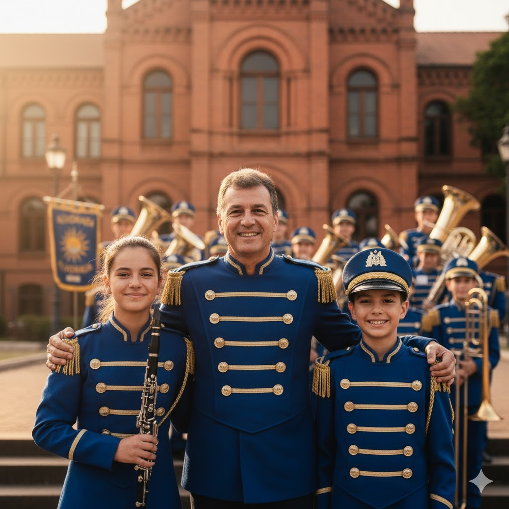

Nossos Projetos Sociais
Acreditamos no poder da música como ferramenta de inclusão e transformação. Nossos projetos são o coração da nossa missão.
Oficinas Musicais na Comunidade
Levamos a música para além dos nossos ensaios. Regularmente, nossos membros mais experientes, sob a supervisão de instrutores, realizam oficinas gratuitas de percussão e sopro em escolas públicas e centros comunitários da região.
O objetivo é despertar o interesse pela arte, oferecer uma atividade construtiva para crianças e adolescentes e identificar novos talentos que possam, no futuro, integrar a nossa banda.
Faça Parte da Mudança
Seja um Voluntário
Você tem habilidades administrativas, de comunicação ou simplesmente vontade de ajudar? Precisamos de voluntários para organizar eventos, buscar patrocínios e apoiar nossa logística. Sua ajuda é fundamental.
Doe um Instrumento
Muitos jovens talentosos não têm condições de adquirir um instrumento. Se você tem um instrumento musical em bom estado que não usa mais, sua doação pode transformar a vida de alguém.
Apoio Financeiro
Sua doação financeira nos ajuda a custear uniformes, manutenção de instrumentos, transporte para apresentações e o lanche de nossos jovens músicos. Qualquer valor faz uma grande diferença.
Como Doar
Doação via PIX
Use nossa chave PIX para uma doação rápida e segura.
Chave PIX (CNPJ):
00.123.456/0001-78
Conta Bancária
Você também pode doar diretamente em nossa conta.
Banco do Brasil
Agência: 1234-5
Conta: 54321-0